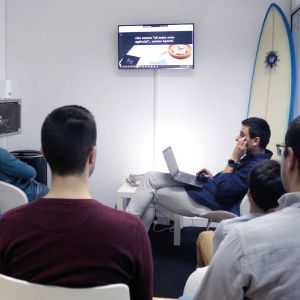
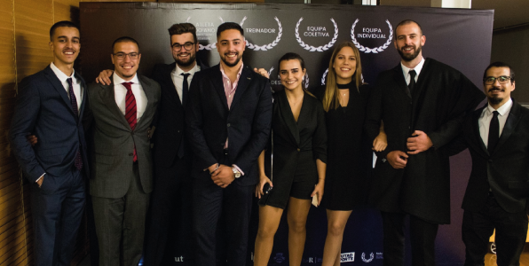
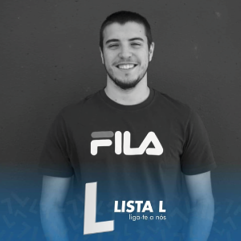
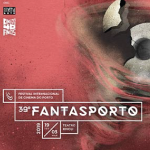
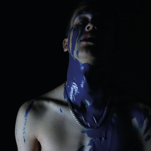

Estágio Profissional 4por4


Depois de um estágio curricular, fui convidado a integrar num estágio porfissional na empresa 4por4.
Com o objetivo de dessenvolver as minhas competências na área do Front-End-Developer
departamento imagem associação académica utad

Com o apoio de uma equipa fantástica, no ano letivo de 2018/2019 tive a oportunidade de fazer parte da equipa de Comunicaçao e Imagem da AAUTAD
Tendo dessenvolvido projetos como Semana Académica, Caloirada aos Montes, UTAD CUP entre outros..
Uma experiência que marcou o percuso académico pela aproximação ao que é o contexto de trabalho.
vice presidente do núcleo comunicação e multimédia

Depois se fazer parte do Núcleo de Comunicação e Multimédia como vogal no departamento de markting, avancei para um novo projeto e fui candidato como vice presidente.
Após as eleições ganhas, esta experiência, deu-me a aprender como fazer a gestão de uma equipa e a organizar atividades didáticas e lúdicas de uma intituição e curto médio prazo.
Nomeação fantasporto - cinema fantastico - BlueBird


Em 2018 com uma equipa de mais 4 pessoas, no âmbito escolahr dessenvolvi uma curta metragem experimental "BlueBird" foi nomeada para prémio de Curta Metragem de Cinema Internacional, Cinema Português e ainda Melhor Curta Metragem de Estudantes